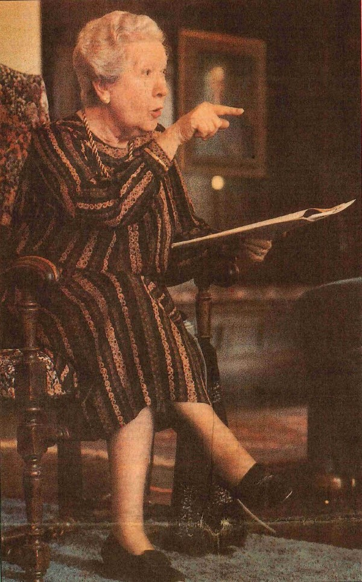
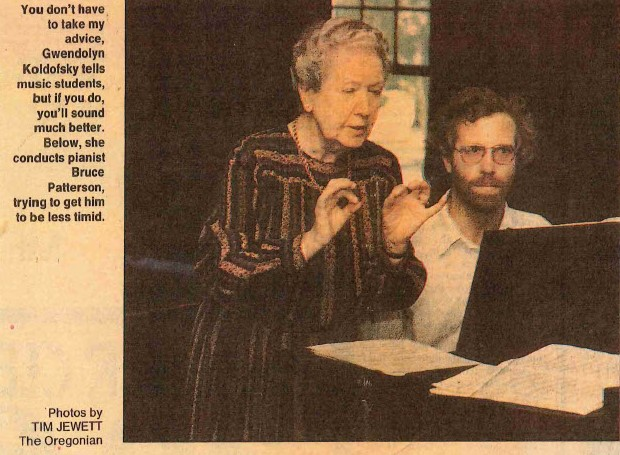
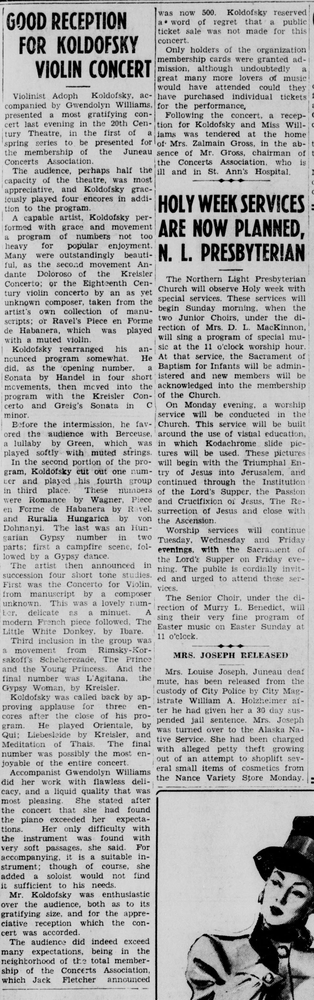
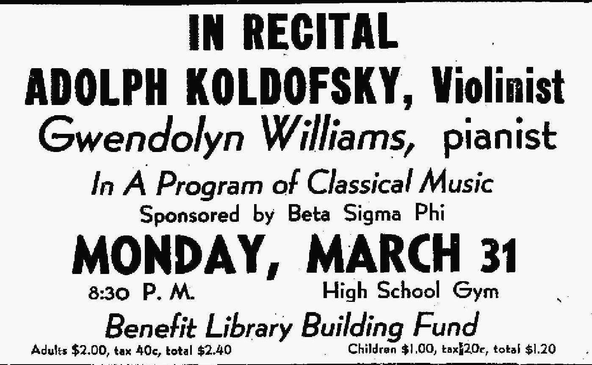
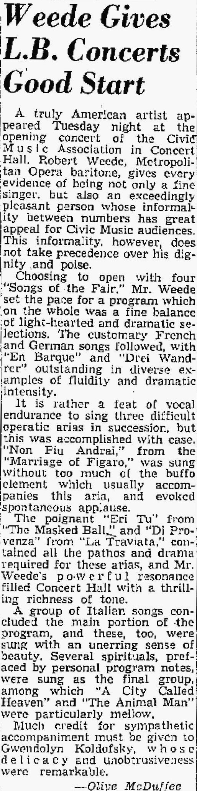

'Profiles in Music' Interview with William Triplett
Previously unpublished recording of an extended radio interview from spring of 1989, titled 'Profiles in Music: Gwendolyn Koldofsky'.
Lotte Lehmann: Santa Barbara Farewell Recital with Gwendolyn Koldofsky (Audio Recording from 1951)
21 .wav files of one of Lotte Lehmann's two farewell recitals from 1951, performing with Koldofsky. It is no longer commercially accessible, but a copy was found in the personal effects of Alan Smith at the University of Southern California by Elvia Puccinelli. It was digitized by David Huff, sound preservationist at the University of North Texas, and is published here under the Creative Commons Attribution 4.0 International license.
'Queen of the Art Song': The Oregonian
News article on Gwendolyn Koldofsky, and two color scans of the associated photos, by Tim Jewett, from clippings provided by Daniel Lockert. Originally published on pages C1 and C3 of The Oregonian on 6 July 1987. Property of Oregonian Publishing Co. and republished here digitally under a no-contest agreement; they may not be reused.


Media Advisory: Koldofsky Obituary
Undated media advisory mailed to Music Academy of the West staff in Santa Barbara following Gwendolyn Kodolfsky’s death.
Printed Program and Remarks: Gwendolyn Koldofsky Memorial Concert, USC 1999
Printed Program and Remarks: Gwendolyn Koldofsky Memorial Concert, USC 1999.
Gwendolyn Koldofsky Memorial Audio
Previously unpublished, private recording, sponsored and organized by Alan Smith, of the spoken tributes to Gwendolyn Koldofsky by Steven Sample, Larry Livingston and Marilyn Horne from the Memorial event held in October 1999 at Bovard Auditorium at USC.
Koldofsky Student List Text
Handwritten document of Koldofsky students, categorized as singers, pianists, or conductors. Provided by Mona Lands.
Recommended Reading List Text
Extensive literature list distributed to Kodofsky students at USC, giving insight into Koldofsky as a scholar.
Koldofsky: Suggested Vocal Repertoire
.pdf scan of Gwendolyn Koldofsky's handwritten song literature repertoire suggestions for her students. Original copy provided by Daniel Lockert, published here under the Creative Commons Attribution 4.0 International license.
Notes for Recital Preparation and Repertoire by Gwendolyn Koldofsky, Literature List for Collaborative Pianists by Russell Miller
From the personal archives of Gwendolyn Koldofsky pupil, Russel Miller, this .pdf scan includes handwritten notes by Koldofsky's concerning recital preparation, appropriate repertoire and literature. It also includes an extensive literature list compiled by Miller himself and is published under the Creative Commons Attribution 4.0 International license.
Steven Harlos: Koldofsky Lesson Notes
Scan of notes from song class, a private lesson and annotations on a recital programming assignment provided by Koldofsky student Steven Harlos, in Koldofsky's own handwriting.
Studies with Gwendolyn Koldofsky at the University of Southern California: Deon Nielsen Price Reminisces
Author Deon Nielsen Price submitted this preprint to Elvia Puccinelli on 4 November 2024 for use here.
'Collaborating Across Generations'
Link to an online article on Koldofsky's work at USC by Julie Riggott, with pictures from archives.
Gwendolyn Koldofsky Sayings
A collection of previously unpublished Koldofsky's sayings, by her pupil, pianist Marshall Williamson. Found in the USCB archives by Elvia Puccinelli.
The Mme. K. Diaspora: the Legacy of the Great Gwendolyn Koldofsky
Video from the CollabFest 2020 conference, International Keyboard Collaborative Arts Society featuring tributes to Gwendolyn Koldofsky from Russell Miller, Arlene Shrut, Jean Barr, Judith Bible, Paula Fan, John Greer, Martin Katz, Victoria Kirsch, Karl Paulnack and Elvia Puccinelli.
Interview with Paula Fan
Link to interview with Koldofsky student Paula Fan, care of the Lotte Lehmann League.
Dane Williams Archives: Williams-Koldofsky Art, Photography and Paraphernalia
7 images of Gwendolyn Koldofsky (née Williams) memorabilia, from the private archives of her nephew, Dane Williams.
List of Further Newspaper and Magazine References
A list of magazine and newspaper articles about Gwendolyn Koldofsky.
'Good Reception for Koldofsky Violin Concert': The Daily Alaska News
Published in The Daily Alaska Empire, 27 Mar. 1947, p. 8. Retrieved from the Library of Congress, www.loc.gov/item/sn83045499/1947-03-27/ed-1/.

Daily Sitka Sentinal Recital Announcement: Gwendolyn and Adolph
Published in the Daily Sitka Sentinal, March 31, 1947, p. 4.

Lehmann and Koldofsky: Article and Photos
Lotte Lehmann and Koldofsky: Link to article, photos and further resources available on the website of the Lotte Lehmann League.
McDuffee, Olive, ‘Weede Gives L.B. Concerts Good Start’, The Independent, Long Beach, 6 October 1954
The Independent, Long Beach, 6 October 1954, p. 10.

Recital Program: Adolf Koldofsky, Gwendolyn Williams, William Vennard
1950 Idyllwild Concert Program.
Recital Program: Marilyn Horne, Gwendolyn Koldofsky
New Orleans Opera Guild on October 13, 1974.
Recital Program & Notes: Charles Roe, Gwendolyn Koldofsky and others
Koldofsky Memorial Benefit on January 31, 1983.
'In Honor of Lotte Lehmann', 1986 Tribute Concert
Memorial Concert Program and related printed notes and pictures for the Lotte Lehmann memorial concert on Sunday, July 13 1986 in Abravanel Hall at the Music Academy of the West.
Written Tributes to Gwendolyn Koldofsky
Solicited by Jean Barr, a collection of handwritten tributes from the 1994 National Piano Pedagogy Conference.
Handwritten Biography (ca. 1953)
Provided by Mona Lands.
Koldofsky Acknowledgements
A list of the many pianists, archivists, pedagogues and writers who inspired and made possible this collaboratively sourced digital collection dedicated to Gwendolyn Koldofsky.